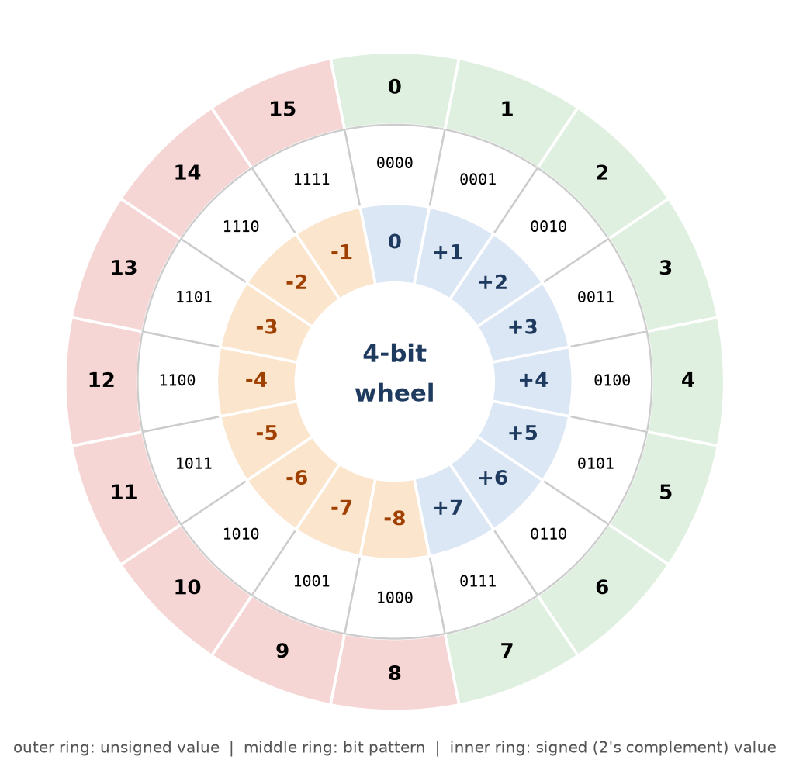
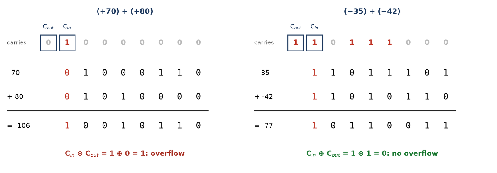
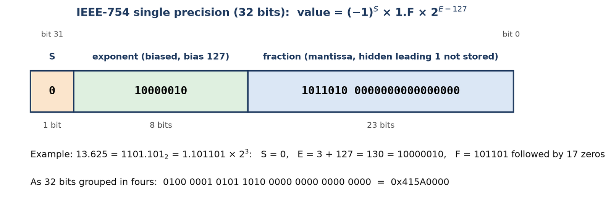
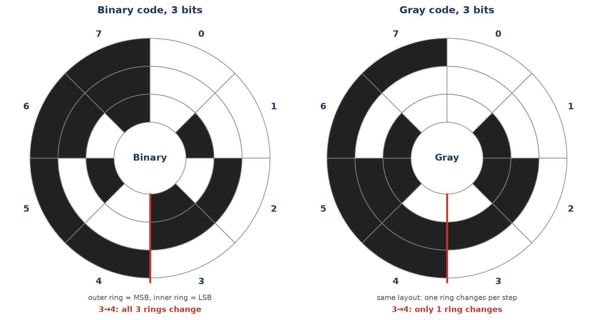

Chapter 8: Signed Numbers, Floating Point and Binary Codes¶
How a machine with no minus sign, no decimal point and no letters still represents negative numbers, fractions, text and decimal digits
Chapter 7 showed how to write a non-negative number in binary and how to subtract by adding a complement. A real machine needs more than that. It has to store negative numbers, and it has to do so in a fixed number of bits, with the sign inside the pattern itself, because a register contains nothing but 0s and 1s. It has to cope with quantities as different as the diameter of an atom and the distance to a star. It has to store letters, punctuation and decimal digits that a person typed. And whatever representation it picks has to be cheap to compute with, since the adder is the only arithmetic circuit we have built so far.
This chapter collects the conventions that make all of that possible. None of them is a law of nature; each is a design decision, and you will see why each one was chosen. We begin with the three ways of writing signed integers and show why 2's complement won. We then add, subtract and detect overflow in 2's complement, and sketch how multiplication and division are built from shifting and adding. After that we turn to floating point, the binary version of scientific notation, and to the binary codes (BCD, Excess-3, Gray and ASCII) used for decimal digits, positions and characters. The chapter closes with decimal arithmetic in a binary machine, where the "add 6" correction shows how a binary adder can be made to count in tens.
What you will learn
- Represent signed integers in signed-magnitude, 1's complement and 2's complement, and state the range and the number of zeros of each.
- Add and subtract in 2's complement, and detect overflow with the carry rule and with the sign rule.
- Describe multiplication and division as shift-and-add and shift-and-subtract, and use shifts to multiply and divide by two.
- Encode a number in a floating-point format with a normalised mantissa and a biased exponent, and outline IEEE-754 single precision.
- Encode and decode data in BCD, Excess-3, Gray code and ASCII, and distinguish weighted from non-weighted codes.
- Add decimal numbers held in BCD using the +6 correction.
8.1 Representing Signed Numbers¶
Inside the machine a number is only a string of bits; there is no separate "+" or "\(-\)" symbol. The convention shared by all the schemes below is that the leftmost bit is the sign bit: 0 means positive and 1 means negative. The remaining bits hold the magnitude, in a way that depends on the scheme. In fixed-point representation the radix point is assumed to be at a fixed place, and for integers that place is just to the right of the least significant bit. (Section 8.5 describes the alternative, floating point, in which the point moves.)
The three schemes differ only in how the magnitude of a negative number is written.
The three signed schemes
- Signed-magnitude: a sign bit followed by the true magnitude in the remaining bits.
- Signed-1's-complement: positive numbers as in signed-magnitude; a negative number is the 1's complement of its positive form (every bit inverted, sign bit included).
- Signed-2's-complement: positive numbers as usual; a negative number is the 2's complement of its positive form. This is what real computers use.
Example 8.1: +9 and -9 in an 8-bit word
Problem. Write \(+9\) and \(-9\) in eight bits in each of the three schemes.
Solution. \(+9 = 0000\,1001\) in all three schemes, with sign bit 0. For \(-9\):
- Signed-magnitude only flips the sign bit: \(1000\,1001\).
- Signed-1's-complement inverts all eight bits of \(+9\): \(1111\,0110\).
- Signed-2's-complement inverts all eight bits and adds 1: \(1111\,0110 + 1 = 1111\,0111\).
Answer.
| Value | Signed-magnitude | Signed-1's-complement | Signed-2's-complement |
|---|---|---|---|
| \(+9\) | 0 0001001 |
0 0001001 |
0 0001001 |
| \(-9\) | 1 0001001 |
1 1110110 |
1 1110111 |
(A space is shown after the sign bit only for readability.)
Example 8.2: Representing -45
Problem. Represent \(-45\) in 8-bit signed-magnitude, signed-1's-complement and signed-2's-complement.
Solution. \(45 = 32 + 8 + 4 + 1 = 0010\,1101\).
- Signed-magnitude: set the sign bit, \(1010\,1101\).
- Signed-1's-complement: invert every bit, \(1101\,0010\).
- Signed-2's-complement: add 1 to the 1's complement, \(1101\,0011\).
Answer. \(-45 = 1010\,1101\) (SM), \(1101\,0010\) (1's), \(1101\,0011\) (2's). All three schemes write \(+45\) as \(0010\,1101\).
Two zeros, and the range of each scheme¶
Signed-magnitude and 1's complement both have a positive zero and a negative zero. In 8 bits, signed-magnitude has \(+0 = 0000\,0000\) and \(-0 = 1000\,0000\), and 1's complement has \(+0 = 0000\,0000\) and \(-0 = 1111\,1111\). A second zero wastes a code and complicates comparisons, since the hardware must test "is it \(+0\) or \(-0\)?". In 2's complement, as we saw in Section 7.5, the 2's complement of \(0000\,0000\) is \(0000\,0000\) again, so there is only one zero. The pattern left over, \(1000\,0000\), is put to use as the extra negative value \(-128\).
| Scheme | Range for \(n\) bits | Range for \(n = 8\) | Zeros | Arithmetic hardware |
|---|---|---|---|---|
| Signed-magnitude | \(-(2^{n-1}-1)\) to \(+(2^{n-1}-1)\) | \(-127\) to \(+127\) | two | needs sign comparison and possible subtraction |
| Signed-1's-complement | \(-(2^{n-1}-1)\) to \(+(2^{n-1}-1)\) | \(-127\) to \(+127\) | two | needs the end-around carry |
| Signed-2's-complement | \(-2^{n-1}\) to \(+(2^{n-1}-1)\) | \(-128\) to \(+127\) | one | just an adder, no special cases |
Table 8.1: Range, number of zeros and hardware cost of the three schemes.
Why is there one more negative value than positive? Because zero is grouped with the positives (its sign bit is 0), exactly one bit pattern, \(100\ldots0\), is left over on the negative side, and it becomes \(-2^{n-1}\). The asymmetry is the giveaway that a representation is 2's complement. Table 8.2 shows the ranges for the usual word lengths.
| Bits | Minimum | Maximum | Unsigned maximum \(2^n - 1\) |
|---|---|---|---|
| 4 | \(-8\) | \(+7\) | 15 |
| 8 | \(-128\) | \(+127\) | 255 |
| 16 | \(-32{,}768\) | \(+32{,}767\) | 65,535 |
| 32 | \(-2^{31}\) | \(2^{31}-1\) | \(2^{32}-1\) |
Table 8.2: Range of \(n\)-bit signed-2's-complement integers.
To make the three schemes concrete, Table 8.3 lists four 4-bit patterns and what each scheme says they mean.
| Bits | Signed-magnitude | 1's complement | 2's complement |
|---|---|---|---|
0011 |
\(+3\) | \(+3\) | \(+3\) |
1011 |
\(-3\) | \(-4\) | \(-5\) |
1111 |
\(-7\) | \(-0\) | \(-1\) |
1000 |
\(-0\) | \(-7\) | \(-8\) |
Table 8.3: The same four bit patterns read under the three conventions.
The wheel and the weight of the sign bit¶
The odometer picture of Chapter 7 explains 2's complement completely. An \(n\)-bit register is a wheel with \(2^n\) positions. Counting upward from 0 you reach \(2^{n-1} - 1\) and then wrap round; the convention is that the upper half of the wheel stands for the negative numbers. Figure 8.1 draws the wheel for four bits. The pattern 1111 sits one step before 0000, so it behaves as \(-1\); 1110 is \(-2\); and 1000, directly opposite 0000, is \(-8\).

The same fact can be stated as a single rule that makes 2's-complement arithmetic "just work": give the most significant bit a negative weight. In an 8-bit word the MSB is worth \(-128\) rather than \(+128\), and the other bits keep their usual positive weights. A 12-hour clock is a small example of the same thing: "3 hours ago" and "9 hours ahead" land on the same spot, because 12 wraps to 0, so \(-3\) and \(+9\) are the same reading. The sign bit is nothing mystical; it simply says "you are in the upper (negative) half of the wheel".
Example 8.3: Reading a 2's-complement pattern
Problem. What signed value does the 8-bit pattern \(1110\,1011\) represent?
Method 1: weighted sum, with the MSB worth \(-128\).
Method 2: negate to read the magnitude. The sign bit is 1, so the number is negative. Its 2's complement is the magnitude: invert \(1110\,1011\) to \(0001\,0100\) and add 1 to get \(0001\,0101 = 21\). The value is \(-21\).
Answer. \(1110\,1011 = -21\). Both methods agree, which is why no special "negative handling" is needed: the negative weight of the MSB is already in the bits.
A second quick example: \(1111\,0111\) has a leading 1, so complement it to get \(0000\,1001 = 9\), and the value is \(-9\). If the leading bit is 0, read the pattern as an ordinary binary number.
Example 8.4: The most negative number has no positive twin
Problem. Show that in \(n\)-bit 2's complement the negation of \(-2^{n-1}\) gives back the same pattern, illustrating with the 8-bit value \(-128\).
Solution. \(-128 = 1000\,0000\). Invert: \(0111\,1111\). Add 1: \(1000\,0000\). The pattern is unchanged. The reason is that \(+128\) lies outside the range \(-128\) to \(+127\), so the true result of the negation cannot be stored: the negation of the most negative number overflows.
Answer. The 2's complement of \(1000\,0000\) is \(1000\,0000\) itself. This is the single value in 2's complement whose negative cannot be represented.
Sign-extend, do not zero-pad
To widen a 2's-complement number, replicate the sign bit; do not pad with zeros. The 4-bit pattern \(1011\) is \(-5\); as eight bits it is \(1111\,1011\), which is also \(-5\). Padding with zeros would give \(0000\,1011 = +11\). Positive numbers can be widened either way, because the sign bit is 0.
Why 2's complement won¶
Three advantages together settled the matter. There is only one zero, so no code is wasted and there is no ambiguity in a comparison. There is one extra negative value, giving a contiguous range. And, decisively, ordinary binary addition just works: no sign comparison, no end-around carry and no correction step. Every processor discussed in this book uses signed-2's-complement for integers.
8.2 Addition and Subtraction in 2's Complement¶
Once you accept the wheel picture, the rules are almost embarrassingly short.
Arithmetic rules for signed 2's complement
Addition. Add the two numbers, sign bits included, exactly as if they were unsigned. Discard any carry out of the sign position. The answer is already in correct 2's-complement form (provided it fits; see Section 8.3).
Subtraction (\(A - B\)). Take the 2's complement of the subtrahend \(B\) and add it to \(A\), again discarding the end carry. There is no separate subtract operation at all.
Subtraction as "add the 2's complement" is exactly what the adder-subtractor of Unit 2 arranges. Its mode input \(M\) passes \(B\) through exclusive-OR gates, so with \(M = 1\) every bit of \(B\) is inverted, and the same \(M\) is fed in as the carry into the least significant stage. Inverting plus a carry-in of 1 is precisely "invert and add 1": \(A - B = A + \overline{B} + 1\).
Example 8.5: Same-sign additions
Problem. Compute \((+35) + (+42)\) and \((-35) + (-42)\) in 8-bit 2's complement.
\((+35) + (+42)\). \(+35 = 0010\,0011\) and \(+42 = 0010\,1010\).
00100011 (+35)
+ 00101010 (+42)
----------
01001101 = +77 (sign bit 0, correct)
\((-35) + (-42)\). \(-35 = 1101\,1101\) and \(-42 = 1101\,0110\).
11011101 (-35)
+ 11010110 (-42)
----------
1 10110011 discard the carry -> 10110011
The pattern \(1011\,0011\) is negative; its 2's complement is \(0100\,1101 = 77\), so the value is \(-77\).
Answer. \(+77\) and \(-77\). Both are inside the range, so there is no overflow.
Example 8.6: Subtraction by adding the 2's complement
Problem. Compute \((+42) - (+35)\) and \((+75) - (+90)\) in 8-bit 2's complement.
\((+42) - (+35)\). The 2's complement of \(35\) (\(0010\,0011\)) is \(1101\,1101\).
00101010 (+42)
+ 11011101 (2's complement of 35)
----------
1 00000111 discard the carry -> 00000111 = +7
\((+75) - (+90)\). \(75 = 0100\,1011\); \(90 = 0101\,1010\), whose 2's complement is \(1010\,0110\).
01001011 (+75)
+ 10100110 (2's complement of 90)
----------
11110001 no end carry
The result \(1111\,0001\) has sign bit 1, so it is negative: its 2's complement is \(0000\,1111 = 15\). The value is \(-15\).
Answer. \(+7\) and \(-15\). Check: \(42 - 35 = 7\) and \(75 - 90 = -15\).
Example 8.7: Mixed signs and like signs, side by side
Problem. In 8-bit 2's complement evaluate (a) \((+58) + (+39)\), (b) \((-58) + (-39)\) and (c) \((+58) + (-39)\), and state the carry into and out of the sign bit for each.
Solution. \(58 = 0011\,1010\), \(39 = 0010\,0111\), \(-58 = 1100\,0110\), \(-39 = 1101\,1001\).
(a) \(0011\,1010 + 0010\,0111 = 0110\,0001 = +97\). Carry into sign bit 0, carry out 0.
(b) \(1100\,0110 + 1101\,1001 = 1\,1001\,1111\). Discarding the carry leaves \(1001\,1111\), which is negative; its 2's complement is \(0110\,0001 = 97\), so the value is \(-97\). Carry into the sign bit 1, carry out 1.
(c) \(0011\,1010 + 1101\,1001 = 1\,0001\,0011\). Discarding the carry leaves \(0001\,0011 = +19\). Carry into the sign bit 1, carry out 1.
Answer. \(+97\), \(-97\) and \(+19\). In (a) and (b) the numbers had like signs; the results are in range. In (c) the operands had opposite signs, so the answer could not overflow.
8.3 Overflow¶
Everything so far has quietly assumed that the true answer fits in the word. If it does not, the stored result is wrong, and something must tell the program. Overflow occurs when the true result of an addition lies outside the representable range, so that the stored sign bit is wrong.
Two facts make overflow easy to reason about. First, it can happen only when both operands have the same sign: two positives, or two negatives. Adding a positive and a negative can never overflow, because the true result lies between the two operands and so is already in range. Second, the symptom is a result with the opposite sign: two positives that give a negative, or two negatives that give a positive.
Overflow detection
For the addition of two 2's-complement numbers,
where \(C_{in}\) is the carry into the sign bit and \(C_{out}\) is the carry out of the sign bit. Overflow occurs exactly when these two carries differ. Equivalently, overflow occurs when two like-signed operands give a result of the opposite sign.
Why does the XOR of the two carries work? Look at the sign column on its own. It adds the two sign bits and the carry \(C_{in}\) arriving from the column on its right, and produces the result sign and \(C_{out}\). The eight possibilities are listed in Table 8.4.
| Sign of \(A\) | Sign of \(B\) | \(C_{in}\) | Result sign | \(C_{out}\) | \(V = C_{in} \oplus C_{out}\) | Meaning |
|---|---|---|---|---|---|---|
| 0 | 0 | 0 | 0 | 0 | 0 | positive + positive, fits |
| 0 | 0 | 1 | 1 | 0 | 1 | positive + positive = "negative": overflow |
| 1 | 1 | 0 | 0 | 1 | 1 | negative + negative = "positive": overflow |
| 1 | 1 | 1 | 1 | 1 | 0 | negative + negative, fits |
| 0 | 1 | 0 | 1 | 0 | 0 | mixed signs, never overflows |
| 1 | 0 | 0 | 1 | 0 | 0 | mixed signs, never overflows |
| 0 | 1 | 1 | 0 | 1 | 0 | mixed signs, never overflows |
| 1 | 0 | 1 | 0 | 1 | 0 | mixed signs, never overflows |
Table 8.4: The sign column of a 2's-complement adder. \(V\) is 1 exactly in the two rows where like-signed operands produce an opposite-signed result.
Example 8.8: An overflow and a non-overflow
Problem. In 8-bit 2's complement (range \(-128\) to \(+127\)) evaluate \((+70) + (+80)\) and \((+70) + (+42)\) and check for overflow.
\((+70) + (+80)\). \(70 = 0100\,0110\) and \(80 = 0101\,0000\).
01000110 (+70)
+ 01010000 (+80)
----------
10010110 sign bit = 1 (the result looks negative!)
The carry into the sign bit is 1 and the carry out is 0, so \(V = 1 \oplus 0 = 1\): overflow. Two positives gave a negative result: \(150 > 127\) cannot be stored, and the pattern \(1001\,0110\) actually reads as \(-106\).
\((+70) + (+42)\). \(42 = 0010\,1010\).
01000110 (+70)
+ 00101010 (+42)
----------
01110000 = +112 (sign bit 0)
The carry into the sign bit is 0 and the carry out is 0, so \(V = 0\): no overflow, and \(112\) is in range.
Answer. \((+70) + (+80)\) overflows; \((+70) + (+42) = +112\) is valid. Figure 8.2 shows the carries for the first sum alongside a case that has a carry out but no overflow.

A carry out is not an overflow
Carry and overflow are different things. A carry out of the sign bit is routine for signed numbers and is simply discarded; in Example 8.5, \((-35) + (-42)\) produced a carry and the answer was perfectly correct. Overflow is flagged when the carry in and the carry out of the sign bit differ. For unsigned numbers the situation is reversed: there a carry out of the most significant bit means the result did not fit. The processor therefore computes both flags and lets the program decide which one matters, which is why the status register of Unit 5 has a carry bit C and an overflow bit V.
A handy way to find the carry into the sign bit is to add the low seven bits on their own and see whether that produces a carry into position 7. For the first sum above, \(1000110 + 1010000 = 1\,0010110\), so the carry into the sign bit is 1, and the sign column is \(0 + 0 + 1 = 1\) with nothing to carry out, so \(C_{out} = 0\).
Example 8.9: Four additions, with and without overflow
Problem. Perform each 8-bit signed addition, give the decimal result, and state the carry out, the carry into the sign bit and \(V\).
| Sum | Binary | Result | \(C_{out}\) | \(C_{in}\) | \(V\) | Verdict |
|---|---|---|---|---|---|---|
| \(+70 + +80\) | 01000110 + 01010000 |
10010110 (\(-106\)) |
0 | 1 | 1 | overflow |
| \(+70 + -80\) | 01000110 + 10110000 |
11110110 (\(-10\)) |
0 | 0 | 0 | \(-10\), valid |
| \(-70 + +80\) | 10111010 + 01010000 |
00001010 (\(+10\)) |
1 | 1 | 0 | \(+10\), valid |
| \(-70 + -80\) | 10111010 + 10110000 |
01101010 (\(+106\)) |
1 | 0 | 1 | overflow |
Comment. Only the two like-sign additions overflow. In rows 2 and 3 the carry out is irrelevant. The shortcut that always works is to look at the signs, not the carries: two positives giving a negative, or two negatives giving a positive, is overflow. Rows 1 and 4 fail that test immediately.
Example 8.10: Justifying overflow in two ways
Problem. In 8-bit 2's complement compute \((+96) + (+53)\). Does overflow occur? Justify using the carry rule and by comparing the true sum with the range.
Solution. \(96 = 0110\,0000\) and \(53 = 0011\,0101\).
01100000 (+96)
+ 00110101 (+53)
----------
10010101 looks like -107
Carry-rule test: the low seven bits \(1100000 + 0110101 = 1\,0010101\) carry into the sign bit (\(C_{in} = 1\)), and nothing carries out (\(C_{out} = 0\)), so \(V = 1 \oplus 0 = 1\). Range test: the true sum is \(149 > 127\), outside the representable range.
Answer. Overflow occurs. The stored pattern \(1001\,0101\) reads as \(-107\), which is \(149 - 256\).
Example 8.11: Predict, then verify
Problem. Before doing any binary addition, predict whether each 8-bit sum overflows: (a) \((+100) + (+50)\), (b) \((-100) + (-50)\), (c) \((+100) + (-50)\). Then verify (a).
Prediction. (a) Like signs, true sum \(150 > 127\): overflow. (b) Like signs, true sum \(-150 < -128\): overflow. (c) Opposite signs, so no overflow is possible; the true result \(+50\) is in range.
Verification of (a). \(100 = 0110\,0100\) and \(50 = 0011\,0010\):
01100100 (+100)
+ 00110010 (+50)
----------
10010110 sign bit 1
\(C_{in} = 1\) (from the low seven bits \(1100100 + 0110010 = 1\,0010110\)) and \(C_{out} = 0\), so \(V = 1\): overflow. The stored value is \(-106\), not \(+150\).
Answer. (a) and (b) overflow, (c) does not.
Example 8.12: Spot the error in an overflow argument
Problem. A student adds \((+90) + (+70)\) in 8-bit 2's complement, obtains \(1010\,0000\), observes that the carry out of the sign bit is 0, and concludes "no carry out, therefore no overflow". Explain why this is wrong.
Solution. Overflow is not the same as carry out. The correct test is \(C_{in} \oplus C_{out}\) of the sign bit, or equivalently whether two like-signed operands produced an opposite-signed result. Here \(90 = 0101\,1010\) and \(70 = 0100\,0110\), giving \(1010\,0000\). The low seven bits carry into the sign bit (\(C_{in} = 1\)) and \(C_{out} = 0\), so \(1 \oplus 0 = 1\): overflow. Two positives produced a negative sign, and the true sum \(160 > 127\).
Answer. The verdict is overflow, and the pattern \(1010\,0000\) actually stores \(-96\) (\(160 - 256\)).
Overflow in subtraction¶
Because \(A - B\) is computed as \(A + (2\text{'s complement of } B)\), the overflow test is the same carry test on that addition. Seen in terms of signs only, the rule becomes: subtraction overflows exactly when \(A\) and \(B\) have opposite signs and the sign of the result differs from the sign of \(A\). (Subtracting a negative is adding a positive, so the dangerous case is operands of opposite signs, just as for addition the dangerous case was like signs.)
Example 8.13: Overflow in a subtraction
Problem. Test the sign rule on \((+100) - (-50)\) in 8 bits and confirm it with a carry-based check.
Solution. \(A\) is positive and \(B\) is negative, so they have opposite signs. The true result is \(+150\), outside the range. To compute it, add the 2's complement of \(-50\), which is \(+50 = 0011\,0010\), to \(+100 = 0110\,0100\):
01100100 (+100)
+ 00110010 (2's complement of -50, i.e. +50)
----------
10010110 sign bit 1, but A was positive
The result is negative although \(A\) is positive, so the sign rule reports overflow. The carry check agrees: \(C_{in} = 1\), \(C_{out} = 0\), \(V = 1\).
Answer. Overflow; the stored result \(1001\,0110\) reads as \(-106\).
A common real-world form of overflow is the wrap-around of a counter. An 8-bit 2's-complement counter holding \(0111\,1111\) (\(+127\)) and incremented by 1 becomes \(1000\,0000\), which is \(-128\): the counter wraps to the most negative value, and the overflow flag is set. On the wheel of Figure 8.1 the same thing happens one step clockwise past \(+7\) (\(0111\)), which lands on \(-8\) (\(1000\)); an 8-bit counter does it at \(+127\).
Example 8.14: A 4-bit adder-subtractor with overflow
Problem. A 4-bit adder-subtractor (Unit 2) takes \(A = 0110\) and \(B = 0011\). Determine \(S_3 S_2 S_1 S_0\), the output carry \(C_4\), the carry \(C_3\) into the last stage and the overflow flag \(V\) for (i) \(M = 0\) and (ii) \(M = 1\). In each case say whether the result is correct for unsigned operands and for signed operands.
(i) \(M = 0\) (addition). \(0110 + 0011 = 1001\). The low three bits \(110 + 011 = 1001\) carry into the sign position, so \(C_3 = 1\); the sum \(0110 + 0011 = 9\) is below 16, so \(C_4 = 0\). Then \(V = C_3 \oplus C_4 = 1\). As unsigned numbers, \(6 + 3 = 9\) is correct. As signed numbers, \(+6 + (+3) = +9\) lies outside \(-8\) to \(+7\), and the pattern \(1001\) reads as \(-7\): incorrect, overflow.
(ii) \(M = 1\) (subtraction). \(B\) is inverted to \(1100\) and the carry-in is 1: \(0110 + 1100 + 1 = 1\,0011\). So \(S = 0011\), \(C_4 = 1\), and the low three bits \(110 + 100 + 1 = 1011\) carry into the sign position, so \(C_3 = 1\); \(V = 1 \oplus 1 = 0\). As unsigned numbers, \(6 - 3 = 3\) is correct (here \(C_4 = 1\) means "no borrow"). As signed numbers, \(+6 - (+3) = +3\) is also correct.
Answer. (i) \(S = 1001\), \(C_4 = 0\), \(C_3 = 1\), \(V = 1\); (ii) \(S = 0011\), \(C_4 = 1\), \(C_3 = 1\), \(V = 0\).
Example 8.15: Two negatives that do not fit
Problem. Compute \((-75) + (-60)\) in signed-2's-complement representation using eight bits. Does it overflow?
Solution. \(+75 = 0100\,1011\), so \(-75 = 1011\,0101\) (invert and add 1). \(+60 = 0011\,1100\), so \(-60 = 1100\,0100\).
10110101 (-75)
+ 11000100 (-60)
----------
1 01111001 the pattern 0111 1001
The low seven bits \(0110101 + 1000100 = 0111\,1001\) produce no carry into the sign position, so \(C_{in} = 0\). The carry out of the sign position is \(C_{out} = 1\). Then \(V = 0 \oplus 1 = 1\).
Answer. Both operands are negative, yet the sign bit of the result is 0, so the sum is wrong. The true value \(-135\) lies outside \(-128\) to \(+127\). The operation overflows.
Two habits that save marks
Fix the word length before you start and keep every value at that width. And, after any complement subtraction, ask "was there an end carry?"; that single question tells you the sign of the answer. For signed addition, name both carries (into and out of the sign bit) when you claim overflow or its absence.
8.4 Multiplication and Division: An Overview¶
The full multiplication and division circuits, including Booth's algorithm and restoring and non-restoring division, belong to the processor unit. Here we only need the idea, because it shows that these operations too are built from the same pieces we already have: shift registers, adders and subtractors.
Shifts as multiplication by two¶
In binary, shifting every bit one place to the left appends a 0 on the right and doubles the value; shifting one place to the right drops the least significant bit and halves it (rounding down). Shifting left by \(k\) places multiplies by \(2^k\). For example, \(1010_2\) shifted left once is \(10100_2\), that is, \(10 \to 20\). Two kinds of right shift exist. A logical shift fills the vacated left-hand bit with 0 and suits unsigned numbers. An arithmetic shift copies the sign bit into the vacated place, preserving the sign of a 2's-complement number. A left shift can overflow when the result no longer fits, exactly as an addition can.
Example 8.16: Arithmetic shifts on a signed number
Problem. Shift \(-6\) (8-bit 2's complement) one place right arithmetically and one place left.
Solution. \(-6 = 1111\,1010\). An arithmetic right shift copies the sign bit into the new leftmost position and drops the rightmost bit: \(1111\,1101 = -3\), which is \(-6 / 2\). A left shift appends a 0: \(1111\,0100 = -12\), which is \(-6 \times 2\) (and still fits, so no overflow).
Answer. \(-3\) and \(-12\).
Multiplication: shift and add¶
Binary multiplication is the school method with a very short times table. Each multiplier bit is either 0 (add nothing) or 1 (add a copy of the multiplicand); the copy is shifted left by the position of that multiplier bit. The shifted copies, called partial products, are accumulated in a running sum.
Example 8.17: Shift-and-add multiplication
Problem. Multiply \(1011_2\) (\(11\)) by \(1101_2\) (\(13\)).
Solution. The multiplier \(1101\) has 1s in positions 0, 2 and 3. Add the multiplicand shifted by each of those amounts:
multiplier bit 0 = 1: 1011 (11 x 1) running sum: 1011 = 11
multiplier bit 1 = 0: (nothing)
multiplier bit 2 = 1: 101100 (11 x 4) running sum: 110111 = 55
multiplier bit 3 = 1: 1011000 (11 x 8) running sum: 10001111 = 143
Answer. \(1011_2 \times 1101_2 = 10001111_2 = 143 = 11 \times 13\).
For signed operands, a simple scheme works with magnitudes: convert both operands to positive form, multiply, and set the sign of the product as the exclusive-OR of the two operand signs (negative if exactly one operand was negative). Booth's algorithm treats signed 2's-complement operands directly; it is developed with the processor.
Division: shift and subtract¶
Division is the mirror image. The divisor is compared with the dividend, and at each step either subtracted (producing a 1 in the quotient) or not (producing a 0), the partial remainder being shifted left and brought one more bit of the dividend each time. As with multiplication, the sign of the quotient is the XOR of the operand signs, and the hardware needs only a shift register and an adder-subtractor.
Example 8.18: Shift-and-subtract division
Problem. Divide \(1101_2\) (\(13\)) by \(0011_2\) (\(3\)).
Solution. Bring down the dividend bits one at a time, from the most significant, into a partial remainder \(R\). If \(R \ge 3\) subtract 3 and write a quotient bit 1; otherwise write 0.
| Step | Dividend bit | \(R\) after shift-in | \(R \ge 3\)? | Quotient bit | \(R\) after step |
|---|---|---|---|---|---|
| 1 | 1 | 1 | no | 0 | 1 |
| 2 | 1 | 11 (3) | yes | 1 | 0 |
| 3 | 0 | 0 | no | 0 | 0 |
| 4 | 1 | 1 | no | 0 | 1 |
Answer. The quotient bits read \(0100 = 4\) and the final remainder is \(1\). Check: \(13 = 4 \times 3 + 1\).
8.5 Floating-Point Representation¶
A fixed-point format wastes bits. To hold both \(10^{30}\) and \(10^{-30}\) in fixed point you would need hundreds of bits, most of them zeros. Floating point instead stores a significant part and a scale, exactly like scientific notation: an astronomer writes the mass of the Sun as \(1.989 \times 10^{30}\) kg, not as 1989 followed by twenty-seven zeros. The point "floats" to wherever the exponent says. A 32-bit word can therefore hold a subatomic distance or an astronomical one; the representation spends its bits on precision and lets the exponent handle scale.
Fixed point first: the Q format¶
Before the full floating-point machinery, notice that a fixed-point format can also hold fractions, by agreeing in advance where the point sits. In the Q format \(Qm.n\) a word has \(m\) integer bits and \(n\) fraction bits (plus the sign for signed numbers), and the value is the raw integer divided by \(2^n\). The resolution (the step between neighbouring values) is \(2^{-n}\) and the range is about \(\pm 2^m\). To store \(x\) you save \(\text{round}(x \times 2^n)\); to read a value you compute \(\text{raw} \times 2^{-n}\).
Example 8.19: Storing a fraction in a Q format
Problem. Store \(0.75\) in Q4 (four fraction bits), and store \(3.14159\) in the 16-bit signed format Q7.8.
Solution. In Q4, \(0.75 \times 2^4 = 12 = 1100_2\), so the stored pattern is \(1100\) and reading it back gives \(12/16 = 0.75\) exactly. In Q7.8 the step is \(1/256 \approx 0.0039\) and the range is \(-128\) to \(127.996\). The raw value is \(\text{round}(3.14159 \times 256) = \text{round}(804.247) = 804 = \text{0x0324}\); reading it back gives \(804/256 = 3.140625\).
Answer. \(0.75 \to 1100\) in Q4; \(3.14159 \to \text{0x0324}\) in Q7.8, read back as \(3.140625\). The difference from the original is the rounding error that a finite number of fraction bits always causes.
Fixed point is fast and its precision is uniform, but its range is small. Floating point trades speed and uniformity for a vast range, with the precision now relative to the size of the number.
Mantissa, exponent and normalisation¶
A floating-point number has the form
where \(m\) is the mantissa (also called the significand or fraction), \(e\) is the exponent, and the radix \(r\) (2 for binary) is implied and never stored. A separate sign bit gives the sign. The width of the mantissa sets the precision; the width of the exponent sets the range. More exponent bits mean a wider range with coarser precision; more mantissa bits mean finer precision with a narrower range, for a fixed word width.
A given value can be written in many ways (\(0.1101 \times 2^1\), \(0.01101 \times 2^2\), \(0.001101 \times 2^3\) all denote the same number), so a format fixes a standard form. A number is normalised when the most significant digit of the mantissa is non-zero, so that there are no leading zeros. Normalisation gives each value a unique representation and the maximum precision for a fixed mantissa width, since no mantissa bits are wasted on leading zeros. For example,
(shift the mantissa left by three places and reduce the exponent by three). The course text writes a normalised binary mantissa as a fraction \(0.1fff\ldots\) times \(2^e\). Most modern formats instead normalise to \(1.fff\ldots \times 2^e\). In binary the leading digit of a normalised mantissa is always 1, so there is no need to store it: the hidden bit (or implicit bit) is understood, and the freed bit position holds one more bit of the fraction, buying one extra bit of precision at no cost.
The biased exponent¶
The exponent must be able to be negative (for tiny numbers), but storing it in 2's complement would give it a sign bit of its own. Instead the exponent is stored in biased (or excess) form: the stored value is \(E = e + \text{bias}\), an always-positive number, so that exponents compare like unsigned numbers and no separate sign bit is needed. There is a real engineering payoff. Because the exponent field sits at the top of the word, just after the sign, and because it is biased, the bit patterns of positive floating-point numbers sort in the same order as the numbers themselves. A simple unsigned-integer comparison of the raw bits therefore gives the right answer, which makes comparison hardware trivial.
Example 8.20: A toy 8-bit floating-point format
Problem. A simple format has 1 sign bit, a 3-bit biased exponent (bias 3) and a 4-bit normalised mantissa with a hidden leading 1. (a) Represent \((+6.75)_{10}\). (b) Decode the pattern \(0\;010\;1000\).
(a) Step 1, binary: \(6.75 = 110.11_2\). Step 2, normalise: \(110.11 = 1.1011 \times 2^2\), so the true exponent is \(e = 2\) and the fraction after the hidden 1 is \(1011\). Step 3, bias: the stored exponent is \(e + 3 = 5 = 101\). Step 4, assemble: sign 0, exponent \(101\), fraction \(1011\), giving \(0\;101\;1011\).
(b) Fields: sign \(= 0\) (positive); stored exponent \(010 = 2\); fraction \(1000\). Un-bias: \(e = 2 - 3 = -1\). Restore the hidden 1: the significand is \(1.1000_2 = 1 + \tfrac12 = 1.5\). Combine: \(+1.5 \times 2^{-1} = 0.75\).
Answer. \(+6.75 = 0\;101\;1011\) and \(0\;010\;1000 = +0.75\). Notice how the same fraction with a smaller exponent just slides the point left; the significant bits never changed.
(This toy format uses all eight exponent codes as ordinary exponents, so it covers magnitudes from \(1.0 \times 2^{-3} = 0.125\) to \(1.9375 \times 2^4 = 31\). It also has no code for zero, since a mantissa of \(1.xxxx\) can never be zero. Real formats reserve some exponent codes for special values, as we shall now see.)
IEEE-754 single precision¶
The standard floating-point format for most hardware is IEEE-754. In single precision a number occupies 32 bits: 1 sign bit, 8 exponent bits with bias 127, and 23 fraction bits with a hidden leading 1 (Figure 8.3). The value is

Because the exponent field is biased by 127, an exponent field \(E\) from 1 to 254 stands for true exponents from \(-126\) to \(+127\), with no sign bit of its own. The two remaining codes, \(E = 0\) and \(E = 255\), are reserved:
| \(E\) field | Fraction \(M\) | Meaning |
|---|---|---|
| 0 | 0 | \(\pm 0\) |
| 0 | \(\ne 0\) | denormalised number (no hidden 1) |
| 1 to 254 | any | normal number, \(1.M \times 2^{E-127}\) |
| 255 | 0 | \(\pm\infty\) |
| 255 | \(\ne 0\) | NaN (not a number) |
Table 8.5: Interpretation of the exponent field in IEEE-754 single precision.
The same layout in double precision uses 64 bits: 1 sign, 11 exponent bits (bias 1023) and 52 fraction bits, giving about 16 decimal digits of precision. Single precision's 23 fraction bits (24 with the hidden bit) give about 7 decimal digits.
Converting a decimal number to single precision follows four steps, always in this order: (1) convert the number to binary, the integer and fractional parts separately; (2) normalise it to \(1.xxx \times 2^e\) and read off \(e\); (3) set the sign bit, compute the exponent field \(e + 127\) in 8 bits, and take the digits after the point as the fraction, padded with zeros to 23 bits; (4) concatenate. The two things people forget are that the leading 1 is implicit (do not store it) and that the exponent field holds \(e + 127\), never \(e\). A stored \(10000010\) is 130, meaning an actual exponent of 3.
Example 8.21: Encoding 13.625 in IEEE-754 single precision
Problem. Convert \(13.625_{10}\) to IEEE-754 single precision. Give the sign, exponent and fraction separately and say what happened to the leading 1.
Step 1, binary. \(13 = 1101_2\) and \(0.625 = 0.101_2\), so \(13.625 = 1101.101_2\).
Step 2, normalise. \(1101.101 = 1.101101 \times 2^3\), so \(e = 3\).
Step 3, the fields. Sign \(S = 0\). Exponent field \(= 3 + 127 = 130 = 10000010\). Fraction \(= 101101\) (the digits after the point) padded with zeros to 23 bits: \(10110100000000000000000\).
Step 4, assemble.
0 10000010 10110100000000000000000
= 0100 0001 0101 1010 0000 0000 0000 0000 = 0x415A0000
Answer. \(S = 0\), exponent \(10000010\), fraction \(1011010\ldots0\); the leading 1 of \(1.101101\) is not stored, it is the hidden bit.
Example 8.22: A negative number, and a decoding
Problem. (a) Encode \(-6.5\) in single precision. (b) What value is held by the pattern 0x41540000?
(a) \(6.5 = 110.1_2 = 1.101 \times 2^2\). The sign is 1 (negative); the exponent field is \(2 + 127 = 129 = 10000001\); the fraction is \(101\) followed by 20 zeros. The 32 bits are \(1\;10000001\;10100000000000000000000\), which is 0xC0D00000.
(b) 0x41540000 \(= 0100\,0001\,0101\,0100\,0\ldots0\). Regrouping as \(0\;10000010\;10101000\ldots0\): sign 0, exponent field \(10000010 = 130\), so \(e = 130 - 127 = 3\), and the fraction is \(10101\), so the significand is \(1.10101_2 = 1 + \tfrac12 + \tfrac18 + \tfrac1{32} = 1.65625\). The value is \(1.65625 \times 2^3 = 13.25\).
Answer. (a) \(-6.5 = \text{0xC0D00000}\). (b) The pattern is \(13.25\), and \(-13.25\) differs only in the sign bit, 0xC1540000.
Example 8.23: Fields of 18.5, 9.5 and -5.75
Problem. Give the single-precision fields of (a) \(+18.5\), (b) \(+9.5\) and (c) \(-5.75\).
(a) \(18.5 = 10010.1_2 = 1.00101 \times 2^4\). Sign 0; exponent field \(4 + 127 = 131 = 10000011\); first eight fraction bits \(00101000\). Full word: 0x41940000.
(b) \(9.5 = 1001.1_2 = 1.0011 \times 2^3\). Sign 0; exponent field \(3 + 127 = 130 = 10000010\); fraction \(0011\) padded. The word is \(0\;10000010\;00110000000000000000000\), 0x41180000.
(c) \(5.75 = 101.11_2 = 1.0111 \times 2^2\). Sign 1; exponent field \(2 + 127 = 129 = 10000001\); fraction \(0111\) padded. The word is \(1\;10000001\;01110000000000000000000\), 0xC0B80000.
Answer. As above.
Precision is finite¶
Floating point trades range for exactness. Only values whose binary expansion terminates within the mantissa's bit budget are stored exactly; everything else is rounded to the nearest representable pattern. The standard's default rule is round to nearest, ties to even; other rules are truncation (chopping the extra bits, which is biased towards zero) and rounding up or down. Extra guard, round and sticky bits are used during arithmetic so that the final rounding is correct. Precision is not uniform either: numbers near zero are packed tightly, whereas huge numbers are spaced far apart, because the exponent stretches the gaps.
This explains a familiar surprise. Neither \(0.1\) nor \(0.2\) has a terminating binary expansion (Section 7.3), so each is rounded when stored. In double precision, which most languages use, \(0.1\) is stored as a value very slightly above \(0.1\), namely \(0.1000000000000000055511151231257827\ldots\), and \(0.2\) is stored as \(0.200000000000000011102230246251565\ldots\). Their sum, after rounding, is not the same pattern as the stored value of \(0.3\) (which is \(0.29999999999999998889776975\ldots\)), so a program evaluating 0.1 + 0.2 prints \(0.30000000000000004\) and the test 0.1 + 0.2 == 0.3 is false. The lesson is a general rule: never test floating-point values for exact equality; compare within a tolerance, \(|a - b| < \varepsilon\). For the same reason a billing program should hold amounts as integer paise (fixed point), not as binary floating-point rupees.
8.6 Binary Codes¶
Numbers, characters and positions can be encoded in many binary codes. A code is weighted if each bit position carries a fixed weight, so that the digit is the weighted sum of its bits (BCD with weights 8-4-2-1 is the standard example), and non-weighted if there is no such sum, so that a table or a conversion rule is needed. Table 8.6 introduces the codes covered here.
| Code | What it encodes | Type | Key property |
|---|---|---|---|
| BCD (8421) | one decimal digit per four bits | weighted | only 0000 to 1001 are legal |
| Excess-3 | BCD value plus 3 | non-weighted | self-complementing |
| 2421 | one decimal digit per four bits | weighted | self-complementing |
| Gray code | positions | non-weighted | successive values differ in one bit |
| ASCII | characters, 7 bits (128 symbols) | character code | digits and letters run in sequence |
| Parity bit | one extra bit | error check | makes the count of 1s even (or odd) |
Table 8.6: Binary codes and their main properties.
BCD (binary-coded decimal, 8421)¶
In BCD each decimal digit is encoded separately in its own four-bit group, using the binary value 0000 to 1001. The codes 1010 to 1111 are invalid. A number's BCD form therefore looks like its decimal form with each digit replaced by four bits: \((49)_{10} = 0100\,1001\) and \((9750)_{10} = 1001\,0111\,0101\,0000\). Contrast this with pure binary, where \((9750)_{10} = 10011000010110_2\).
BCD pays a price in bits: it uses ten of the sixteen possible patterns per digit, so a number takes more bits than in pure binary. What it buys is a clean decimal appearance and exact decimal digits. A pocket calculator or cash register must show exactly what you typed and never surprise you with rounding on 0.1, and a seven-segment display wants one digit at a time; BCD keeps arithmetic in the decimal world the eye expects, at the price of the six wasted patterns per digit. That trade-off is why financial and calculator hardware has supported BCD since the 1960s.
Excess-3 and the 2421 code¶
Excess-3 encodes a decimal digit as its BCD value plus 3, that is, plus 0011. The digit 4 becomes 0111 and 5 becomes 1000. The code has no all-zero word, and it is self-complementing: inverting the four bits of a digit's code gives the code of its 9's complement. The digit 4 is \(0111\); inverting gives \(1000\), which is Excess-3 for 5, and \(9 - 4 = 5\). That made decimal subtraction (by 9's complement) cheap in early machines, which is why the code was invented. The 2421 code is a weighted code (weights 2, 4, 2, 1, with codes 0 to 4 as in BCD and 5 to 9 as \(1011, 1100, 1101, 1110, 1111\)) that is also self-complementing.
| Digit | BCD (8421) | Excess-3 | 2421 |
|---|---|---|---|
| 0 | 0000 | 0011 | 0000 |
| 1 | 0001 | 0100 | 0001 |
| 2 | 0010 | 0101 | 0010 |
| 3 | 0011 | 0110 | 0011 |
| 4 | 0100 | 0111 | 0100 |
| 5 | 0101 | 1000 | 1011 |
| 6 | 0110 | 1001 | 1100 |
| 7 | 0111 | 1010 | 1101 |
| 8 | 1000 | 1011 | 1110 |
| 9 | 1001 | 1100 | 1111 |
Table 8.7: Decimal digits in BCD, Excess-3 and 2421. Inverting the bits of an Excess-3 or 2421 word gives the code of the 9's complement digit; inverting a BCD word does not.
Example 8.24: BCD and Excess-3
Problem. Encode \((5308)_{10}\) in (a) BCD and (b) Excess-3, and \((4271)_{10}\) in Excess-3.
(a) Replace each digit by its four-bit binary value: \(5 = 0101\), \(3 = 0011\), \(0 = 0000\), \(8 = 1000\), so \(0101\,0011\,0000\,1000\).
(b) Add 3 to each digit before encoding: \(8, 6, 3, 11\), which are \(1000, 0110, 0011, 1011\). So Excess-3 is \(1000\,0110\,0011\,1011\).
Excess-3 of 4271. The digits plus 3 are \(7, 5, 10, 4\), so \(0111\,0101\,1010\,0100\).
Answer. BCD \(0101\,0011\,0000\,1000\); Excess-3 \(1000\,0110\,0011\,1011\); and \(0111\,0101\,1010\,0100\) for 4271.
Example 8.25: Why Excess-3 is self-complementing and BCD is not
Problem. Verify self-complementation for Excess-3 using the digit 4 (whose 9's complement is 5), and explain why plain BCD is not self-complementing.
Solution. Excess-3 of 4 is \(0111\); inverting gives \(1000\), which is Excess-3 of 5, and 5 is the 9's complement of 4. The same works for every digit (the ten code words are symmetric about the centre of the table). In BCD, 4 is \(0100\); inverting gives \(1011 = 11\), which is not a valid BCD digit at all, so BCD is not self-complementing.
Answer. Excess-3 passes the test for digit 4 (\(0111 \to 1000\)); BCD fails it (\(0100 \to 1011\), invalid).
Gray code¶
Gray code (the reflected binary code) is a non-weighted code in which successive values differ in exactly one bit. Table 8.8 gives the three-bit sequence; note how each row differs from the next in a single bit.
| Decimal | 0 | 1 | 2 | 3 | 4 | 5 | 6 | 7 |
|---|---|---|---|---|---|---|---|---|
| Binary | 000 | 001 | 010 | 011 | 100 | 101 | 110 | 111 |
| Gray | 000 | 001 | 011 | 010 | 110 | 111 | 101 | 100 |
Table 8.8: The 3-bit Gray code sequence.
Is the wrap from the last code (\(7 = 100\)) back to the first (\(0 = 000\)) also a one-bit change? Yes: they differ in exactly one bit. So Gray code is cyclic: it closes into a loop with single-bit steps all the way round. The name "reflected" comes from the construction: the \((n+1)\)-bit sequence is the \(n\)-bit sequence, followed by the same sequence in reverse order, with a 0 prefixed to the first half and a 1 to the second.
Gray code exists because of a physical problem. Put ordinary binary on a rotary shaft encoder and slide from 3 (\(011\)) to 4 (\(100\)): all three bits must flip at once (Figure 8.4, left). Physically the sensors never switch at the exact same instant, so for a fleeting moment the disk might read \(111\) (7) or \(000\) (0), a wildly wrong angle that could jolt a robot arm or misfire a machine. With Gray code (Figure 8.4, right) only one bit changes between neighbours, so the worst misreading is off by a single step, and the cyclic property lets a shaft that keeps turning roll seamlessly from its highest reading back to its lowest. Karnaugh maps are laid out in Gray order for the same reason: adjacent cells differ in exactly one variable, which exposes the groupings you simplify.

Binary and Gray conversion
Write the bits of the binary number as \(b_{n-1} \ldots b_1 b_0\) and of the Gray code as \(g_{n-1} \ldots g_1 g_0\).
Binary to Gray: the MSB is copied, \(g_{n-1} = b_{n-1}\); each other Gray bit is the exclusive-OR of the current and the previous (more significant) binary bit, \(g_i = b_{i+1} \oplus b_i\). In one expression, \(G = B \oplus (B \gg 1)\).
Gray to binary: the MSB is copied, \(b_{n-1} = g_{n-1}\); each next binary bit is the XOR of the previous binary bit and the current Gray bit, \(b_i = b_{i+1} \oplus g_i\) (a running XOR from the MSB).
Example 8.26: Binary to Gray and back
Problem. Convert binary \(1011\) to Gray code, and convert the result back.
Binary to Gray (\(b_3 b_2 b_1 b_0 = 1011\)):
g3 = b3 = 1
g2 = b3 XOR b2 = 1 XOR 0 = 1
g1 = b2 XOR b1 = 0 XOR 1 = 1
g0 = b1 XOR b0 = 1 XOR 1 = 0
Gray = 1110
Gray to binary (\(g_3 g_2 g_1 g_0 = 1110\)):
b3 = g3 = 1
b2 = b3 XOR g2 = 1 XOR 1 = 0
b1 = b2 XOR g1 = 0 XOR 1 = 1
b0 = b1 XOR g0 = 1 XOR 0 = 1
Binary = 1011 (matches)
More cases. Binary \(0110 \to\) Gray \(0101\); binary \(1010 \to\) Gray \(1111\); Gray \(1101 \to\) binary \(1001\); binary \(11010 \to\) Gray \(10111\) and Gray \(10111 \to\) binary \(11010\).
Answer. \(1011_2 = 1110\) (Gray), and the reverse conversion recovers \(1011\).
ASCII and the parity bit¶
The ASCII code represents characters (letters, digits, punctuation and control codes) in 7 bits, giving 128 symbols, and is usually stored in an 8-bit byte whose eighth bit is often used as a parity bit. The capital letters run consecutively: 'A' is 65, which is \(100\,0001\) or 41 in hexadecimal; 'B' is 66, and so on up to 'Z' at 90 (5A hex). The lower-case letters start at 'a' $= 97 = $ 61 hex, so 'a' \(-\) 'A' $= 32 = $ 20 hex. The digits run '0' $= 48 = 011\,0000 = $ 30 hex up to '9' $= 57 = $ 39 hex, and the space is 32 = 20 hex. EBCDIC is an alternative 8-bit character code used on some older machines.
| Character | ASCII (hex) | Decimal |
|---|---|---|
| '0' | 30 | 48 |
| '9' | 39 | 57 |
| 'A' | 41 | 65 |
| 'Z' | 5A | 90 |
| 'a' | 61 | 97 |
| space | 20 | 32 |
Table 8.9: Selected ASCII codes.
The character '5' is not the number 5
They are different bit patterns. The character '5' is ASCII 53 (\(011\,0101\)); the number 5 is \(000\,0101\). Converting the text "53" into the integer 53 therefore takes real work: you subtract '0' (48) from each character, since a digit's value is its ASCII code minus 30 hex. Confusing the two is a classic source of bugs: '5' + '5' is 106, not 10.
A parity bit is an extra bit added to a code word so that the total number of 1s is even (even parity) or odd (odd parity). It detects any single-bit error but cannot correct it, since it does not say which bit is wrong. For instance, 'A' is \(100\,0001\), which has two 1s, so with even parity the extra bit is 0; 'C' is \(100\,0011\), which has three 1s, so the extra bit is 1.
8.7 Decimal Arithmetic in a Binary Machine¶
When numbers are held in BCD, an ordinary binary adder can be used to add the digits, but its result may not be a legal BCD digit. Adding \(0111\) and \(0101\) (7 + 5) gives \(1100\), which is 12 in binary but is not a valid BCD digit. The fix is the add-6 correction.
BCD addition rule
Add the two BCD digits (together with any incoming carry) in binary. If the four-bit result is greater than \(1001\) (9), or if a carry was generated out of the group, add \(0110\) (6) to that digit. The carry produced by the correction propagates to the next higher digit.
Why exactly 6? A four-bit group counts in base 16, but a decimal digit rolls over at 10. The gap between the two is \(16 - 10 = 6\), and those are the six illegal patterns 1010 to 1111. When the binary sum runs past 9 it is "ahead" by those six unused codes. Adding 6 skips over the gap and pushes the overflow into the next digit as a proper decimal carry; the correction is the difference between the two counting systems, nothing more. Both conditions in the rule, "sum greater than 9" and "carry out of the group", mean the digit is no longer a legal BCD value. (A carry out of the group arises when the binary sum is 16 or more, as happens when adding 9 and 9.)
Example 8.27: Two single-digit BCD additions
Problem. Add (a) \(3 + 4\) and (b) \(7 + 5\) in BCD.
(a)
0011 (3)
+ 0100 (4)
------
0111 (7) <= 1001, valid BCD. Done.
(b)
0111 (7)
+ 0101 (5)
------
1100 (12) > 1001, INVALID
+ 0110 (add 6)
------
1 0010 -> carry 1, digit 2: 12 is correct
Answer. (a) 7 with no correction. (b) Digit 2 with a carry of 1 into the next position, that is 12. In the same way \(8 + 5\): \(1000 + 0101 = 1101\) (\(> 9\)), \(+ 0110 = 1\,0011\), digit 3 with a carry, that is 13.
Example 8.28: A two-digit BCD addition
Problem. Add \(27 + 48\) in BCD.
Operands. \(27 = 0010\,0111\) and \(48 = 0100\,1000\).
Units digit. \(0111 + 1000 = 1111 = 15 > 9\), so add \(0110\):
1111
+ 0110
------
1 0101 -> units digit = 0101 (5), carry 1 to the tens
Tens digit. \(0010 + 0100 + \text{carry } 1 = 0111 = 7\), which is \(\le 9\), so no correction.
Answer. \(27 + 48 = 0111\,0101 = 75\) in BCD.
The same procedure gives \(36 + 47\): units \(0110 + 0111 = 1101 > 9\), add \(0110\) to get \(1\,0011\) (digit 3, carry 1); tens \(0011 + 0100 + 1 = 1000\) (8, valid). Result \(1000\,0011 = 83\). And \(58 + 27\): units \(1000 + 0111 = 1111 > 9\), add \(0110\) to get \(1\,0101\) (digit 5, carry 1); tens \(0101 + 0010 + 1 = 1000\) (8, valid). Result \(1000\,0101 = 85\). And \(27 + 18\): units \(0111 + 1000 = 1111\), corrected to digit 5 with a carry; tens \(0010 + 0001 + 1 = 0100\). Result \(0100\,0101 = 45\).
Example 8.29: Carries that ripple through several digits
Problem. Add \(459 + 378\) in BCD, and explain the case \(9 + 9\).
Solution. \(459 = 0100\,0101\,1001\) and \(378 = 0011\,0111\,1000\).
- Units: \(1001 + 1000 = 1\,0001\). The binary sum is 17, which produced a carry out of the group; add \(0110\): \(0001 + 0110 = 0111\) (digit 7), and the carry of 1 goes to the tens.
- Tens: \(0101 + 0111 + 1 = 1101 > 9\), so add \(0110\): \(1101 + 0110 = 1\,0011\) (digit 3), carry 1 to the hundreds.
- Hundreds: \(0100 + 0011 + 1 = 1000\) (8, valid).
Result \(1000\,0011\,0111 = 837\), which is indeed \(459 + 378\).
For \(9 + 9\): \(1001 + 1001 = 1\,0010\); the binary adder produced a carry out of the group even though the four-bit sum \(0010\) is itself less than 9. This is the "carry was generated" case of the rule: adding 6 to \(0010\) gives \(1000\) (digit 8) and the decimal carry, giving \(18\).
Answer. \(459 + 378 = 837\), and \(9 + 9 = 1\,1000\) in BCD (that is, 18).
Why BCD at all
A value like \(0.10\) has no exact binary representation, so repeated binary arithmetic on currency accumulates rounding errors. BCD keeps every decimal digit exact. That is why billing and calculator hardware supports it, and why a billing program that must not be off by a paisa stores amounts either in BCD or as integer paise.
8.8 Summary¶
Key points
- The leftmost bit is the sign bit (0 positive, 1 negative). Signed-magnitude and 1's complement have two zeros; 2's complement has one, with range \(-2^{n-1}\) to \(+(2^{n-1}-1)\) and one extra negative value.
- In 2's complement the MSB has weight \(-2^{n-1}\); to read a negative number, take its 2's complement to get the magnitude. Widen a number by sign-extension.
- Addition: add including sign bits and discard the carry out. Subtraction: add the 2's complement of the subtrahend. The same adder does both.
- Overflow can happen only for like-signed operands, and it shows as an opposite-signed result. Hardware computes \(V = C_{in} \oplus C_{out}\) of the sign bit. A carry out alone is not overflow (for signed numbers); for unsigned numbers a carry out does mean the result did not fit.
- Multiplication is shift-and-add and division is shift-and-subtract; the result sign is the XOR of the operand signs. A left shift multiplies by 2, an arithmetic right shift divides by 2 and keeps the sign.
- Floating point stores \(\pm\, m \times 2^e\): a normalised mantissa (precision) and a biased exponent (range). IEEE-754 single precision is \(1 + 8 + 23\) bits, bias 127, hidden leading 1, value \((-1)^S \times 1.F \times 2^{E-127}\); double is \(1 + 11 + 52\) with bias 1023.
- Floating-point results are rounded, so never test them for exact equality.
- BCD is weighted (8421) with 1010 to 1111 unused. Excess-3 is BCD plus 3 and is self-complementing (inverting gives the 9's complement). Gray code changes one bit per step and is cyclic. ASCII is a 7-bit character code. A parity bit detects single-bit errors.
- BCD addition: if a digit sum exceeds 1001 or produces a carry, add 0110 and carry to the next digit. The 6 is the gap between base 16 and base 10.
| Topic | Rule |
|---|---|
| Signed range (\(n\) bits) | SM and 1's: \(\pm(2^{n-1}-1)\) with two zeros; 2's: \(-2^{n-1}\) to \(2^{n-1}-1\), one zero |
| Negate in 2's complement | invert every bit and add 1 |
| Sign extension | replicate the sign bit |
| Add / subtract | add; subtract by adding the 2's complement; discard the end carry |
| Overflow | \(V = C_{in} \oplus C_{out}\); like signs in, opposite sign out |
| Subtraction overflow | operands of opposite signs and result sign differs from \(A\) |
| Float (IEEE single) | \((-1)^S \times 1.M \times 2^{E-127}\), fields \(1/8/23\) |
| Float (IEEE double) | fields \(1/11/52\), bias 1023 |
| Binary to Gray | \(G = B \oplus (B \gg 1)\) |
| Excess-3 | BCD \(+ 0011\); invert bits for the 9's complement |
| BCD addition | digit \(> 1001\) or carry: add \(0110\) |
Table 8.10: Chapter summary.
8.9 Exercises¶
Exercise 8.1. Five multiple-choice items. (i) The range of an 8-bit signed-2's-complement integer is: (A) \(-127\) to \(+127\), (B) \(-128\) to \(+127\), (C) 0 to 255, (D) \(-128\) to \(+128\). (ii) In 2's-complement addition of two numbers, overflow is detected when: (A) there is any end carry, (B) the carry into and out of the sign bit differ, (C) the result is zero, (D) the operands have opposite signs. (iii) In IEEE-754 single precision the exponent field has 8 bits and a bias of: (A) 64, (B) 127, (C) 128, (D) 255. (iv) Binary \(0110\) in Gray code is: (A) 0101, (B) 0100, (C) 0111, (D) 1010. (v) Which code is self-complementing: (A) BCD (8421), (B) Excess-3, (C) pure binary, (D) ASCII?
Answer
(i) B, \(-2^7\) to \(2^7 - 1\). (ii) B, overflow is \(C_{in} \oplus C_{out}\) of the sign bit. (iii) B, the bias is 127. (iv) A, \(g_i = b_{i+1} \oplus b_i\) gives \(0, 1, 0, 1\). (v) B, the 9's complement of a digit is the bitwise inverse of its Excess-3 word.
Exercise 8.2. True or false: (a) signed-2's-complement has two representations of zero; (b) adding a positive and a negative number in 2's complement can never cause overflow; (c) in Gray code two successive values differ in exactly one bit; (d) \((11111111)_2\) read as an 8-bit 2's-complement number equals \(-1\); (e) a carry out of the sign bit always means overflow.
Answer
(a) False: 2's complement has a single zero; signed-magnitude and 1's complement have two. (b) True: overflow needs two like-signed operands. (c) True: it is the defining property. (d) True: \(-128 + 127 = -1\). (e) False: \((-35) + (-42)\) produces a carry out of the sign bit and yet \(-77\) is correct.
Exercise 8.3. Represent \(+45\) and \(-45\) in an 8-bit word in all three schemes (signed-magnitude, signed-1's-complement, signed-2's-complement), and present the answers in a small table.
Answer
\(+45 = 0010\,1101\) in all three schemes.
| Scheme | \(-45\) |
|---|---|
| Signed-magnitude | 1010 1101 |
| Signed-1's-complement | 1101 0010 |
| Signed-2's-complement | 1101 0011 |
Exercise 8.4. (a) What decimal value does the 8-bit signed-2's-complement pattern \(1110\,1011\) represent? Show your working. (b) State the range of a 16-bit word in signed-magnitude and in signed-2's-complement, and how many patterns represent zero in each.
Answer
(a) The sign bit is 1, so the value is negative. The 2's complement is \(0001\,0101 = 21\), so the value is \(-21\) (check: \(-128 + 107 = -21\)). (b) Signed-magnitude: \(-32{,}767\) to \(+32{,}767\), with two zero patterns. Signed-2's-complement: \(-32{,}768\) to \(+32{,}767\), with one zero pattern.
Exercise 8.5. Compare the three signed schemes on (i) the number of bit patterns that mean zero, (ii) whether addition and subtraction can share one adder, and (iii) the integer range for \(n\) bits. Then explain in a sentence or two why almost every modern CPU uses 2's complement.
Answer
(i) Signed-magnitude and 1's complement have two zeros (\(+0\) and \(-0\)); 2's complement has one. (ii) Only 2's complement adds and subtracts with a single ordinary adder and no end-around carry; signed-magnitude needs sign comparison and possible subtraction, and 1's complement needs the end-around carry. (iii) Signed-magnitude and 1's complement: \(-(2^{n-1}-1)\) to \(+(2^{n-1}-1)\); 2's complement: \(-2^{n-1}\) to \(+(2^{n-1}-1)\). 2's complement was chosen because one zero, one adder for both operations and no wasted code make the hardware simplest and fastest.
Exercise 8.6. In 8-bit 2's complement evaluate and give the decimal result of (a) \((+58) + (+39)\), (b) \((-58) + (-39)\), (c) \((+58) + (-39)\), checking for overflow and stating the carry into and out of the sign bit for each.
Answer
(a) \(0011\,1010 + 0010\,0111 = 0110\,0001 = +97\); \(C_{in} = 0\), \(C_{out} = 0\), no overflow. (b) \(1100\,0110 + 1101\,1001 = 1\,1001\,1111\), so \(1001\,1111 = -97\); \(C_{in} = 1\), \(C_{out} = 1\), no overflow. (c) \(0011\,1010 + 1101\,1001 = 1\,0001\,0011\), so \(+19 = 58 - 39\); the operands have opposite signs, so overflow cannot occur.
Exercise 8.7. In 8-bit 2's complement compute \((+96) + (+53)\). Does overflow occur? Justify using the carry-in/carry-out rule and by comparing the true sum with the representable range.
Answer
\(0110\,0000 + 0011\,0101 = 1001\,0101\), which looks like \(-107\). \(C_{in} = 1\) and \(C_{out} = 0\), so \(V = 1\): overflow. The true sum \(149 > 127\) is outside the range \(-128\) to \(+127\).
Exercise 8.8. Without doing any binary addition, predict whether each 8-bit sum overflows and say why: (a) \((+100) + (+50)\), (b) \((-100) + (-50)\), (c) \((+100) + (-50)\). Then verify (a) by adding.
Answer
(a) \(150 > 127\): overflow. (b) \(-150 < -128\): overflow. (c) Opposite signs cannot overflow; the true result \(+50\) is in range. Verification of (a): \(0110\,0100 + 0011\,0010 = 1001\,0110\) (sign bit 1); \(C_{in} = 1\), \(C_{out} = 0\), \(V = 1\), and the stored value is \(-106\), not \(+150\).
Exercise 8.9. A student adds \((+90) + (+70)\) in 8-bit 2's complement, obtains \(1010\,0000\), sees that the carry out of the sign bit is 0, and concludes "no carry out, therefore no overflow". Explain why this is wrong, apply the correct test, and give the true verdict and the value actually stored.
Answer
Overflow is not the same as carry out. The correct test is \(C_{in} \oplus C_{out}\) of the sign bit. \(90 = 0101\,1010\), \(70 = 0100\,0110\), sum \(1010\,0000\): \(C_{in} = 1\), \(C_{out} = 0\), so \(1 \oplus 0 = 1\), overflow. Two positives produced a negative sign; the true sum is \(160 > 127\). The stored pattern \(1010\,0000\) equals \(-96\).
Exercise 8.10. Compute \((+75) - (+90)\) in 8-bit 2's complement by adding the 2's complement of 90. Give the result in decimal and confirm its sign.
Answer
The 2's complement of \(90 = 0101\,1010\) is \(1010\,0110\). \(0100\,1011 + 1010\,0110 = 1111\,0001\) with no end carry, so the result is negative. Its 2's complement is \(0000\,1111 = 15\), so the result is \(-15\). Check: \(75 - 90 = -15\).
Exercise 8.11. A 4-bit adder-subtractor receives \(A = 0110\) and \(B = 0011\). For \(M = 0\) and for \(M = 1\) find \(S_3 S_2 S_1 S_0\), \(C_4\), \(C_3\) and \(V\), and state whether the result is correct for unsigned and for signed operands.
Answer
\(M = 0\): \(S = 1001\), \(C_4 = 0\), \(C_3 = 1\), \(V = 1\); correct as unsigned (\(6 + 3 = 9\)), but as signed numbers \(+9\) is out of range (\(-8\) to \(+7\)) and \(1001\) reads \(-7\): overflow. \(M = 1\): \(B\) inverted \(= 1100\) with carry-in 1: \(0110 + 1100 + 1 = 1\,0011\), so \(S = 0011\), \(C_4 = 1\), \(C_3 = 1\), \(V = 0\); correct as unsigned (\(6 - 3 = 3\), no borrow) and as signed (\(+3\)).
Exercise 8.12. Compute \((-75) + (-60)\) in signed-2's-complement using eight bits. Does it overflow? Justify from the carries into and out of the sign position.
Answer
\(-75 = 1011\,0101\) and \(-60 = 1100\,0100\). The sum is \(1\,0111\,1001\). The low seven bits produce no carry into the sign position (\(C_{in} = 0\)) and a carry leaves it (\(C_{out} = 1\)), so \(V = 0 \oplus 1 = 1\): overflow. Two negatives gave a positive-looking result; the true value \(-135\) is out of range.
Exercise 8.13. (a) Show that negating \(-128\) in 8-bit 2's complement gives \(-128\) again, and explain why this is an overflow of the negation. (b) State a rule for overflow in \(A - B\) expressed in terms of the signs of \(A\), \(B\) and the result, and test it on \((+100) - (-50)\).
Answer
(a) \(-128 = 1000\,0000\); inverting gives \(0111\,1111\) and adding 1 gives \(1000\,0000\) again. \(+128\) does not fit in \(-128\) to \(+127\), so negation overflows. (b) \(A - B\) overflows exactly when \(A\) and \(B\) have opposite signs and the sign of the result differs from that of \(A\). For \((+100) - (-50)\): opposite signs; adding the 2's complement of \(-50\) (that is \(+50 = 0011\,0010\)) to \(0110\,0100\) gives \(1001\,0110\), negative although \(A\) is positive, so overflow; the carry check agrees (\(C_{in} = 1\), \(C_{out} = 0\)).
Exercise 8.14. (a) Multiply \(1101_2\) by \(0101_2\) by shift-and-add. (b) Shift the 8-bit 2's-complement number \(-20\) one place right arithmetically. What does the result mean?
Answer
(a) The multiplier \(0101\) has 1s in positions 0 and 2: \(1101 + 110100 = 1000001_2 = 65 = 13 \times 5\). (b) \(-20 = 1110\,1100\); an arithmetic right shift copies the sign bit: \(1111\,0110 = -10\), which is \(-20 / 2\).
Exercise 8.15. Convert \((+18.5)_{10}\) to normalised binary floating-point form \(1.f \times 2^e\), then give its IEEE-754 single-precision sign, exponent field and first eight fraction bits. Repeat for \(9.5\).
Answer
\(18.5 = 10010.1_2 = 1.00101 \times 2^4\). Sign 0; exponent field \(4 + 127 = 131 = 10000011\); first eight fraction bits \(00101000\). The full word is 0x41940000. For \(9.5 = 1001.1_2 = 1.0011 \times 2^3\): \(S = 0\), exponent \(3 + 127 = 130 = 10000010\), fraction \(0011\) padded to 23 bits, 0 10000010 00110000000000000000000.
Exercise 8.16. (a) Encode \((5308)_{10}\) in BCD and in Excess-3. (b) Verify the self-complementing property of Excess-3 for the digit 4, and explain why plain BCD does not have it.
Answer
(a) BCD: \(0101\,0011\,0000\,1000\). Excess-3 (add 3 to each digit: 8, 6, 3, 11): \(1000\,0110\,0011\,1011\). (b) Excess-3 of 4 is \(0111\); inverted, \(1000\) is Excess-3 of 5 and \(5 = 9 - 4\). BCD of 4 is \(0100\); inverted, \(1011 = 11\), not a valid BCD digit, so BCD is not self-complementing.
Exercise 8.17. Convert binary \(11010\) to Gray code and Gray code \(10111\) back to binary, showing each XOR step. Also convert binary \(1010\) to Gray and Gray \(1101\) to binary.
Answer
Binary \(11010\): \(g_4 = 1\); \(g_3 = 1 \oplus 1 = 0\); \(g_2 = 1 \oplus 0 = 1\); \(g_1 = 0 \oplus 1 = 1\); \(g_0 = 1 \oplus 0 = 1\); Gray \(= 10111\). Gray \(10111\): \(b_4 = 1\); \(b_3 = 1 \oplus 0 = 1\); \(b_2 = 1 \oplus 1 = 0\); \(b_1 = 0 \oplus 1 = 1\); \(b_0 = 1 \oplus 1 = 0\); binary \(= 11010\) (the two conversions are inverses here). Binary \(1010\): \(G = 1, 1\oplus 0, 0 \oplus 1, 1 \oplus 0 = 1111\). Gray \(1101\): \(B = 1, 1 \oplus 1, 0 \oplus 0, 0 \oplus 1 = 1001\).
Exercise 8.18. Add \(36 + 47\) and \(58 + 27\) in BCD, showing the add-6 correction where required.
Answer
\(36 + 47\): units \(0110 + 0111 = 1101 > 9\), add \(0110\): \(1\,0011\) (digit 3, carry 1); tens \(0011 + 0100 + 1 = 1000\) (8, valid). Result \(1000\,0011 = 83\). \(58 + 27\): units \(1000 + 0111 = 1111 > 9\), add \(0110\): \(1\,0101\) (digit 5, carry 1); tens \(0101 + 0010 + 1 = 1000\). Result \(1000\,0101 = 85\).
Exercise 8.19. A 4-bit rotary shaft encoder must report the angular position of a wheel. Explain why the disk is patterned in Gray code rather than straight binary, using the transition from position 7 to position 8 as your worked example (give both codes and count the changing bits).
Answer
In straight binary, \(7 = 0111\) and \(8 = 1000\): all four bits flip at once. Real sensors never switch at exactly the same instant, so a transient misreading such as \(1111\) (15) or \(0000\) (0) can occur. In Gray code \(7 = 0100\) and \(8 = 1100\), which differ in exactly one bit, so the worst error is a single step. Gray code is also cyclic, so the wrap-around from the last position to the first is a one-bit change as well.
Exercise 8.20. A programmer tests if (0.1 + 0.2 == 0.3) and is surprised that the condition is false. Explain what happens when \(0.1\) and \(0.2\) are stored in binary floating point, why the equality fails, and what general rule this implies.
Answer
Neither \(0.1\) nor \(0.2\) has a terminating binary expansion (\(0.1 = 0.0\overline{0011}_2\)), so each is rounded to the nearest representable pattern. Their stored sum differs by a tiny amount from the separately rounded stored value of \(0.3\) (in double precision the sum is \(0.30000000000000004\)), so == is false. The rule: never test floating-point values for exact equality; compare within a tolerance, \(|a - b| < \varepsilon\). For money, use integer minor units (paise) or BCD.